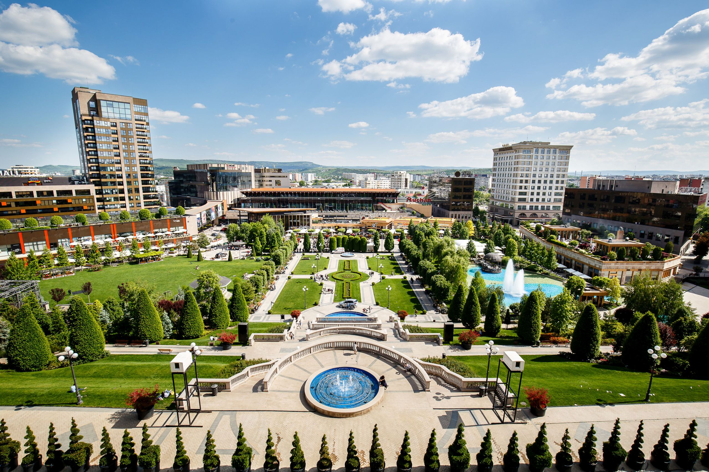

Cluj-Napoca, a city in north western Romania, received some 370,000 tourists in 2016, 15% more than in the previous year, Digi24.ro reported. By comparison, the city has almost 325,000 residents, according to the latest census.
“In 2016, 15% more tourists visited Cluj-Napoca, compared to 2015. The total number of those who visited us exceeded the number of city residents. We estimate around 370,000 visitors, tourists throughout the entire 2016,” said Oana Buzatu, a spokesperson with the Cluj-Napoca City Hall, quoted by Digi24.ro.
Out of the total number of visitors, over a quarter were foreign tourists. Cluj-Napoca received 99,131 foreign tourists in 2016, according to data from the Cluj County Statistics Department, quoted by Monitorulcluj.ro. Most tourists came from neighboring Hungary (14,903), Germany (11,717), Italy (9,766), France (7,293), and Poland (6,270).
Sibiu (Hermannstadt in German) was the largest and wealthiest of the seven walled citadels* built in the 12th century by German settlers known as Transylvanian Saxons. The riches amassed by its guilds paid for the construction of both impressive buildings and the fortifications required to protect them.
Sibiu's Old Town retains the grandeur of its earlier days when rich and powerful guilds dominated regional trade. Like Sighisoara and Brasov, it has a distinctly Germanic feeling. Sections of the medieval wall still guard the historic area, where narrow streets pass steep-roofed 17th century buildings with gable overhangs before opening into vast, church-dominated squares such as Great Square and Little Square.
Sibiu is a pedestrian-friendly city with two easily accessible levels: the Upper town, home to most of Sibiu's historic sights, and the Lower town, lined with colorful houses on cobblestone streets and bounded by imposing city walls and defense towers overlooking the river Cibin.
The first record of the city of Timisoara, built on the site of an ancient Roman fortress called Castrum Regium Themes, dates back to 1212.
Over the years, Timisoara, the largest city in western Romania, has been influenced by many cultures. The Romans used it as an important crossroads fortress until the Tatars destroyed it in the 13th century. Conquered by Turkish armies in 1552, Timisoara remained under their protection until 1718 when the region of Banat came under Austrian rule for two centuries. Timisoara later became a vital commercial and manufacturing town. Turks, Austrians, Germans and Serbs all left their mark and their influence can be seen in neighborhoods throughout the city even today.
The charm of this city, settled on the northern bank of the Bega River, lies in its distinct architectural character and vibrant cultural life. Frequently referred to as "Little Vienna," Timisoara is home to year-round musical and theatrical performances, art galleries, museums and a buzzing nightlife. A progressive, cosmopolitan place, Timisoara was the first city in Europe and second in the world after New York, to use electricity to illuminate its public streets.
Known for its wide, tree-lined boulevards, glorious Belle Époque buildings and a reputation for the high life (which in the 1900s earned its nickname of "Little Paris"), Bucharest, Romania's largest city and capital, is today a bustling metropolis.
Romanian legend has it that the city of Bucharest was founded on the banks of the Dambovita River by a shepherd named Bucur, whose name literarily means "joy." His flute playing reportedly dazzled the people and his hearty wine from nearby vineyards endeared him to the local traders, who gave his name to the place.
The Arch of Triumph
(Arcul de Triumf)
Address: Piata Arcul de Triumf
Initially built of wood in 1878 to honor the Romanian soldiers who won the Independence War, Bucharest's Arch of Triumph was rebuit in 1922 and redecoreted in 1936 with base reliefs carved in granite brought from Deva (Transylvania).
Designed by the architect, Petre Antonescu, the Arch stands 89 feet high.
An interior staircase allows visitors to climb to the top for a panoramic view of the city.
The sculptures decorating the structure were created by leading Romanian artists, including Ion Jalea, Constantin Medrea and Constantin Baraschi.

Iasi is the most important political, economic and cultural centre of the province of Moldavia as well as one of the oldest cities in Romania. Located in the northeastern part of the country, Iasi was for many centuries the crossing point of the most important commercial routes linking Poland, Hungary, Russia and Constantinople.
Deeply rooted in history, Iasi has been the main centre of Moldavian culture since 1408. The city prides itself with publishing the first Romanian newspaper and establishing the first Romanian university. Today, Iasi is home to five universities.
Over the past 500 years, history, culture and religious life have molded the city's unique character. Iasi boasts an impressive number of Orthodox churches, almost 100, most of them located in the so-called Golden Plateau (Platoul de Aur). The oldest, the Princely Saint Nicholas Church, dates from the reign of Stephen the Great (Stefan cel Mare, 1457-1504). The finest, however, are the 17th century St. Paraschiva Metropolitan Cathedral and Trei Ierarhi Church, the last a curious example of Byzantine art, erected in 1635-1639 by Vasile Lupu. Its outer walls and twin towers are intricately carved in what many think of as stone lace.